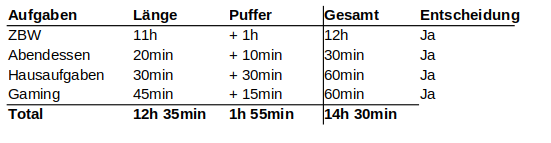
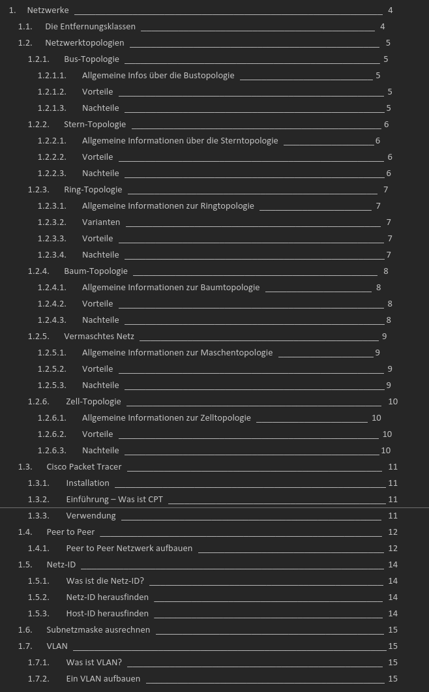

Planung
Eigene Planung
Aufgabe 1
| Antwort | Nein, ich sah es nie wirklich als eine Nötigkeit, den Tag zu planen. Vielleicht wird sich dies in Zukunft ändern, wenn mein Tagesplan auch etwas voller ist. |
| ALPEN-Methode |  |
| Egebnisse | Das Ganze lief eigentlich ziemlich gut nach Plan, da es nicht viele Elemente im Plan hatte. Ob es bei einem vollen Tagesplan genauso funktionieren würde, weiss ich nicht. |
Aufgabe 2
| Reflektion Tagesplanung |
|
Reflexion Arbeitsplanung
Aufgabe 1
| Antwort | Ich strukturiere Informationen gerne hierarchisch. Für verschiedene Informationen und Kategorien verwende ich gerne Überschriften, um die einzelnen Informationen zusammenzufassen. |
| Beispiel |  |
Aufgabe 1
| Gewähltes Tool | Google Keep |
| Vorteile |
|
| Nachteile |
|
| Erfahrungen | Ich mag dieses Tool sehr, und ich benutze es häufig, um meine Notizen zu speichern. Die Sache mit der Unterordnung stört mich jedoch... Ich würde gerne strukturierte Listen erstellen mit mehr als bloss eine Stufe. |